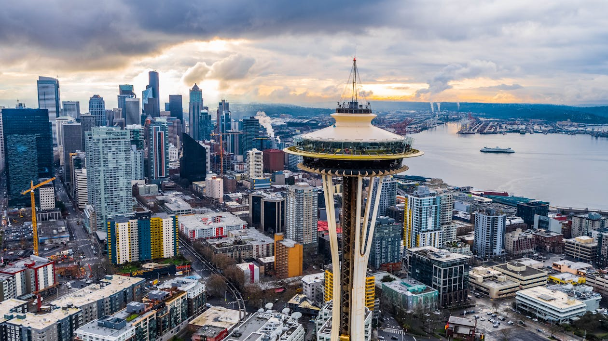
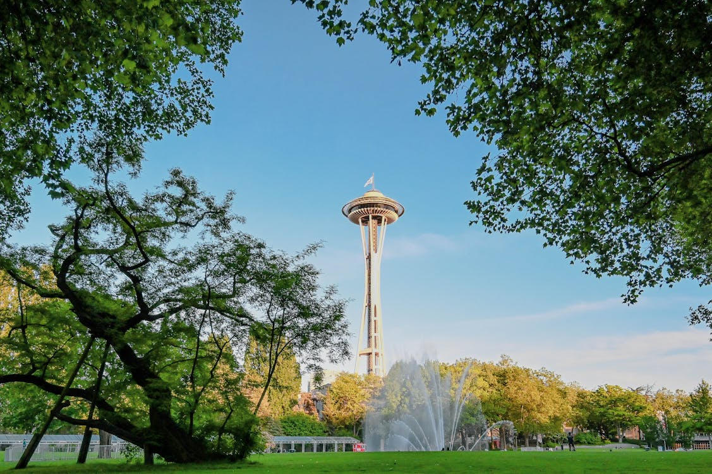

Space Needle
Seattle, Washington USA


About the Space Needle
The Space Needle is one of the most recognizable landmarks in the world, standing at 605 feet tall in Seattle, WA. Built for the 1962 World’s Fair, it offers breathtaking views of the city, Mount Rainier, and Puget Sound.
Things to Do Nearby
Just a short walk away, visitors can explore the Seattle Center, which includes attractions like the Museum of Pop Culture, the Chihuly Garden and Glass, and the Pacific Science Center.